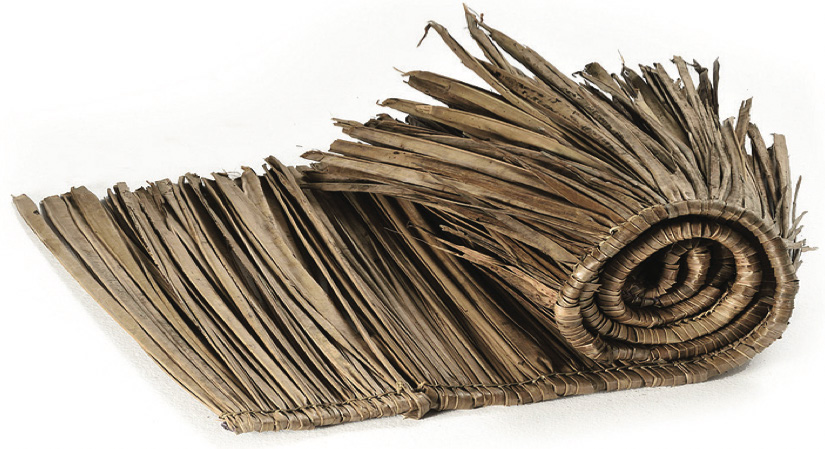

Sayansi na teknolojia ya ufumaji ilifanywa kwa kufuma na kusuka makuti, matete au majani ya mianzi ili kupata umbo fulani. Kielelezo namba 22, kinawasilisha makuti yaliyosukwa.

Kielelezo namba 22: Makuti yaliyosukwa

Jadili namna ya kuendeleza sayansi na teknolojia ya ususi katika jamii zetu kwa maendeleo ya sasa.
Sayansi na teknolojia asilia ya uchongaji
Sayansi na teknolojia ya asili ya uchongaji ilihusisha uchongaji wa vifaa kama vile vinu, michi, bakuli, vijiko, sahani, miko, upawa, meza, vigoda, chanuo, mipini, vitanda, viti na marimba za muziki. Pia, ulihusisha uchongaji wa vyombo vya usafiri kwenye maji mfano, majahazi, mitumbwi, ngalawa na makasia. Mfano wa jamii zilizofanya shughuli za uchongaji wa vitu mbalimbali ni Wamakonde, Wagogo, Wakimbu, Wanyamwezi, Wayao na Waha. Jamii za Wayao na Wamakonde zilijihusisha zaidi na uchongaji wa vitu vilivyotumika kwa mapambo.
Sayansi na teknolojia ya uchongaji ilitumia maarifa na ujuzi